CUSTOMISED SOFTWARE
In-house software development for emerging technology solutions.
- AI and machine learning
- IoT connectivity
- Data analytics
- Autonomous control systems
Discover MĀKI. Together, we challenge the limits of unmanned vehicles. We take progressive technologies to create inventive solutions to tackle industrial and environmental challenges where others cannot.
Get ready to make waves.
↓At MĀKI, we redefine the possibilities for accessible measuring and monitoring by creating customised systems that are more flexible in the NZ market. While other companies excel in one domain, what makes us different is our expertise across both hardware and software, and our ability to seamlessly blend emerging technologies from both together into creating novel solutions.
In-house software development for emerging technology solutions.
Mechanical, electrical, aeronautical and communications engineering.
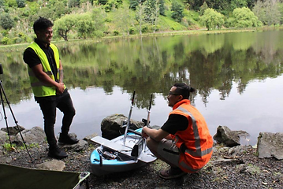
Operational support beyond delivery.
FOR COUNCILS & INFRASTRUCTURE MANAGERS
We map retention ponds, treatment ponds and detention basins using autonomous surface vessels — delivering accurate sediment volumes, bathymetric maps and condition reports without diver risk or operational disruption.
FOR WATER INFRASTRUCTURE MANAGERS
MĀKI deploys underwater ROVs and surface rovers to inspect reservoir infrastructure — capturing high-resolution video and imagery of submerged walls, floors and inlet/outlet structures without dewatering or confined space entry.
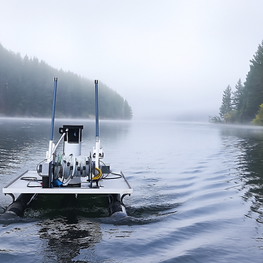
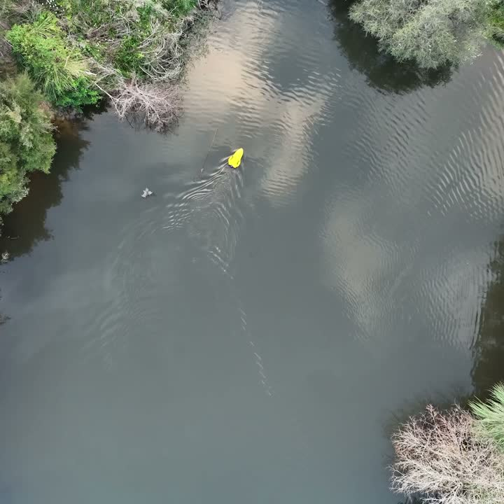
.png)
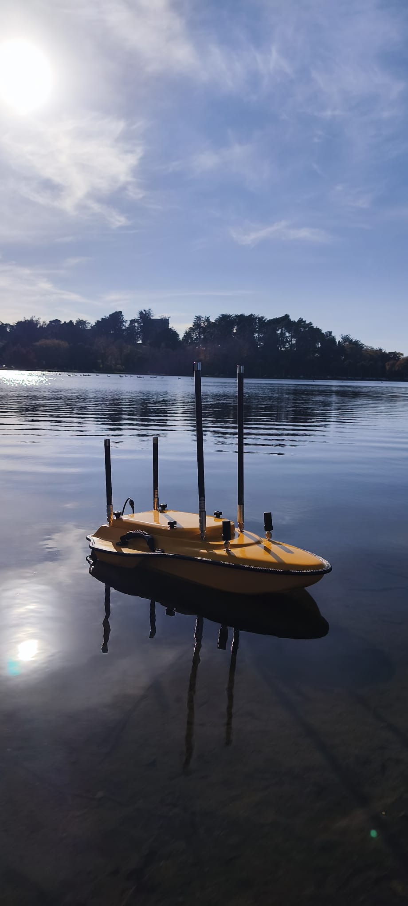
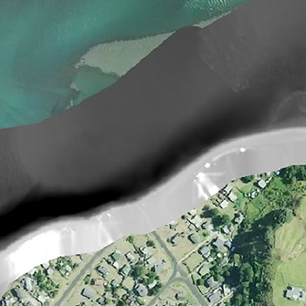
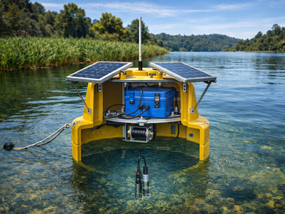
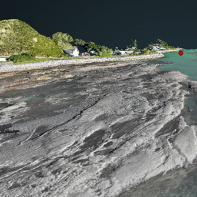
Want to know more about what we can do for you?
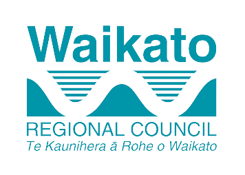
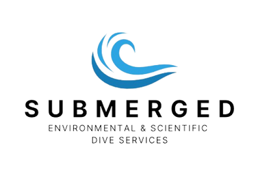
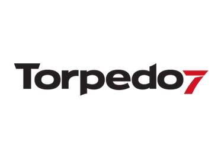
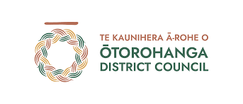
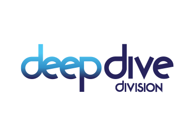
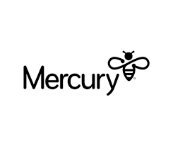
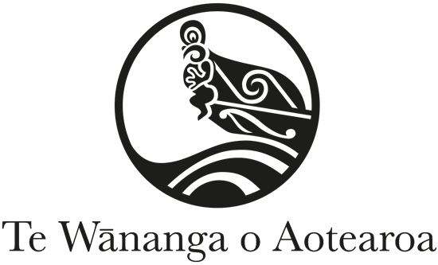

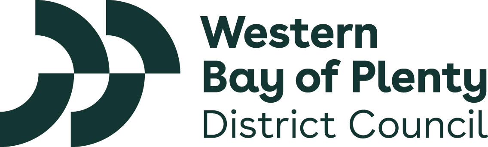
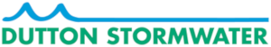
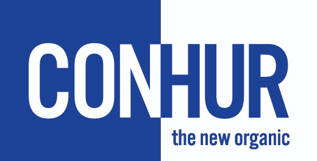
All Videos
 ▶
▶ ▶
▶ ▶
▶ ▶
▶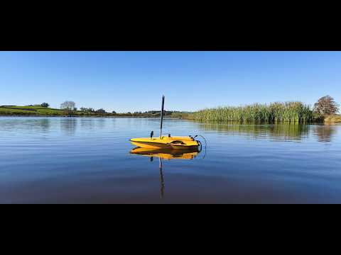
▶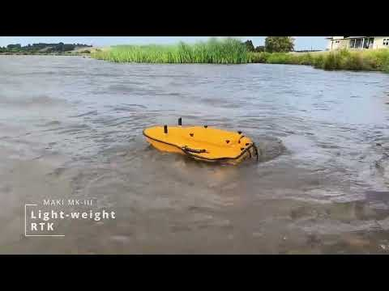
▶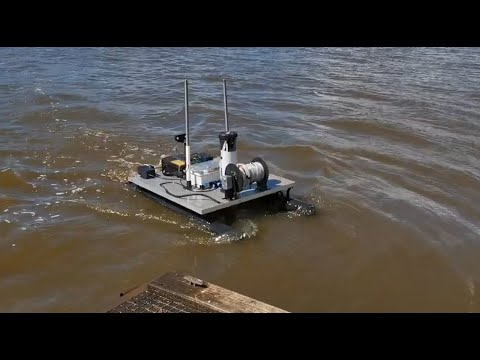
▶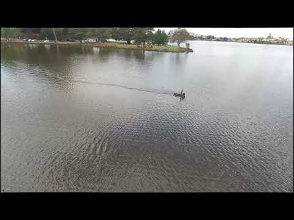
▶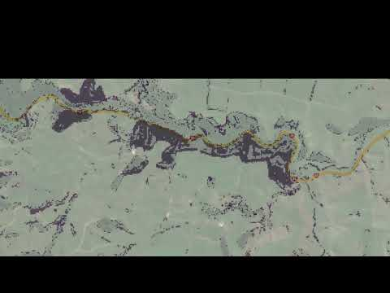
▶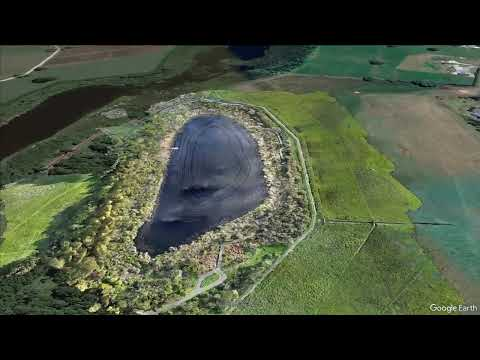
▶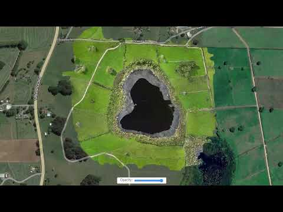
▶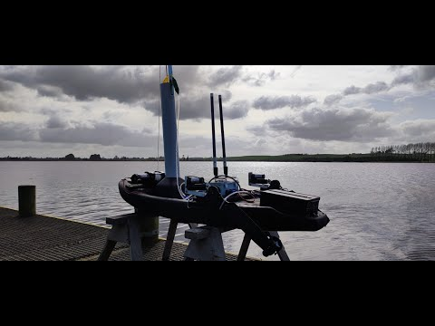
▶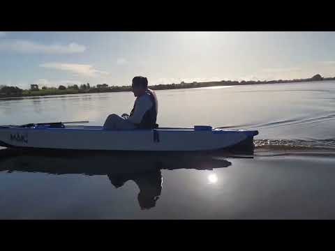
▶To find out what we can do for you
Email info@maki.nz or call +64 20 4194 1275.
Send us an Enquiry instead.